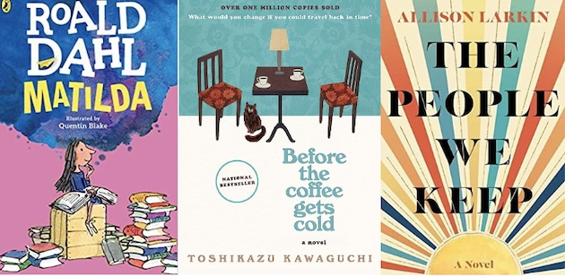

How would you identify your current emotions?
I heard a analogy one time about the purpose of an electron in a single atom. An atom is the basic building block of all matter. Everything is made up of atoms! In its center, there are smaller particles called protons (the positive particles) and neutrons (the neutral particles). There is, however, one more particle that exists outside of the center of the atom and revolves around it, the electron (the negative particle). Even in nature, negativity is present and accepted. After all, it does make up all matter. However, it stays floating around the outside of the center of the atom. Sadness and negative emotions are no different than that. They exist as naturally and commonly as any other happier or neutral feeling. Although, they don't have to reside in the core of your being. Let is dwell on the outside.
Book Recommendations Based On Your Specific Mood
| Specific Moods | Book Recommendations | Summary | Price |
|---|---|---|---|
| Lonely | Matilda by Roald Dahl | It is a children's novel (but great for all ages) that features a story of a girl, Matilda Wormwood, a precocious child with an uncaring mother and father, and her time in school run by the tyrannical headmistress Miss Trunchbull. | $9.95 |
| Heartbroken | Before the Coffee Gets Cold by Toshikazu Kawaguchi | This is a 2015 novel by Toshikazu Kawaguchi. It tells of a cafe in Tokyo that allows its customers to travel back in time, as long as they return before their coffee gets cold. | $21.95 |
| The People We Keep by Allison Larkin | As April Sawicki moves though the world, meeting people who feel like home, she chronicles her life in the songs she writes and discovers that where she came from doesn't dictate who she has to be. | $15.95 |
TV Series Recommendation: Normal People (2020)
Based off the novel written by: Sally Rooney
Below is a short clip from Episode 1 of the limited series